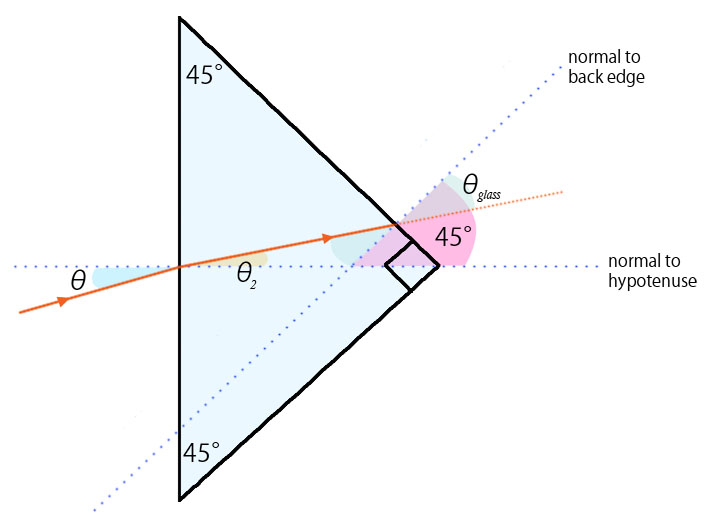

Part a
The equation for total internal reflection is derived from Snell's law, and is as follows:
$n_1 sin (\theta) = n_2 sin (90^{\circ})$
There is no change in direction of the incident light when it enters the hypotenuse of the prism because it is normal to the edge of entry (therefore, snell's law dictates that there is no bending of the light). Because of this, the light, after entering the prism, hits the opposite edge at an angle that is 45° from the normal of that edge. We can then therefore replace $\theta$ with 45°, and nt with 1 (since that is the ior of the air around the prism) and solve for ni:
$n_1 = {sin(90^{\circ}) \over sin(45^{\circ})}$ which is just $\sqrt{2}$
Part b
Refer to the picture slide below. We calculated in part a that light will totally internally reflect off the back side as long as the ior of the prism glass was higher than 1.41, which it is, in this case. Since the triangle is isoceles and symmetrical, no matter where the beam is placed, as long as it enters normal to the hypotenuse, there will be total internal reflection and the beam will exit from the hypotenuse in the opposite direction that it entered, i.e. 180°.
Part c
Use Snell's Law:
${sin(\theta_1) \over sin(\theta_2)} = {n_2 \over n_1}$
Where $n_1$ is the ior of the surroundings (assuming air, n=1), $\theta_1$ is the angle from the normal of entry, and $n_2$ is the ior of the glass prism. The equation then becomes
$\theta_2 = {arcsin({sin(\theta_1) \over n_2})}$
Part d
To determine whether the beam actually internally reflects at all if it enters at the angle given in Part c, we can use Snell's law again to attempt to find what angle the beam will exit the other end of the prism.
The angle that is normal to the 45° back edge (hereby named $\theta_{glass}$) will be 45° minus the angle found in Part c (refer to diagram in part f for a clearer visual representation of this)
The equation to be used then becomes this:
$\theta_{air} = {arcsin(n_{glass} sin(\theta_{glass}))}$
You can try using this equation with your own numbers, but knowing that the answer from part c was probably very small, and the ior of the prism is greater than 1.41, there ends up being an error because we are trying to calculate the arcsin of a value greater than the domain of definition of arcsin. Therefore the light must be undergoing total internal reflection, and considering the symmetrical properties of the prism, reflects off of the other back edge as well.
Part e
If the light internally reflects off of both back surfaces, then the situation becomes fairly similar to Part b. With respect to the angle of the incoming light, there is once again a 180° turnaround for the beam.
Part f

For the light to experience total internal reflection, refer back to the equation used in Part a:
$n_{glass} sin (\theta_{glass}) = n_{air} sin (90^{\circ})$
Rearrange the equation to find the greatest possible angle the light must hit the back edge to experience total internal reflection:
$\theta_{glass} = {arcsin({sin(90^{\circ}) \over n_{glass}})}$
To find the angle normal to the hypotenuse of the prism, take 45° (which is the angle between the normal of the back edge and the normal of the hypotenuse) and subtract $\theta_{glass}$ from it.
This angle (labeled $\theta_2$ on diagram) is the greatest angle that the light can be bent from the normal on entering the prism glass. Knowing this angle, use Snell's Law again to find the angle of entry.
$ \theta = {arcsin({n_{glass} sin(\theta_2) \over n_{air}})}$
 Refer to the above diagram. To find the angle of incidence ($\theta_i$ on diagram), the angle of the sun from the horizon is subtracted from 90°.
We can then use Snell's Law to solve for the angle of refraction, knowing that the ior of air is 1, and the ior of water is 1.33.
$\theta_r = {arcsin({sin(\theta_i) \over 1.33})}$
Since the ray of sunlight and the cross section of the cylindrical tank make a right angle triangle, tangent can be used to find the adjacent dimension.
${d \over tan(\theta_r)} = h$
Refer to the above diagram. To find the angle of incidence ($\theta_i$ on diagram), the angle of the sun from the horizon is subtracted from 90°.
We can then use Snell's Law to solve for the angle of refraction, knowing that the ior of air is 1, and the ior of water is 1.33.
$\theta_r = {arcsin({sin(\theta_i) \over 1.33})}$
Since the ray of sunlight and the cross section of the cylindrical tank make a right angle triangle, tangent can be used to find the adjacent dimension.
${d \over tan(\theta_r)} = h$
 Assume that the wavelengths given are the upper and lower boundaries of the visible white light. Since there is a different index of refraction for the glass depending on the wavelength of light, the two angles of refraction need to be calculated separately, using Snell's Law.
Use $\theta_{r1} = {arcsin({sin(\theta_i) \over n_{\lambda_s}})}$ for the smaller angle, and similarly use $\theta_{r2} = {arcsin({sin(\theta_i) \over n_{\lambda_l}})}$ for the larger angle.
Assume that the wavelengths given are the upper and lower boundaries of the visible white light. Since there is a different index of refraction for the glass depending on the wavelength of light, the two angles of refraction need to be calculated separately, using Snell's Law.
Use $\theta_{r1} = {arcsin({sin(\theta_i) \over n_{\lambda_s}})}$ for the smaller angle, and similarly use $\theta_{r2} = {arcsin({sin(\theta_i) \over n_{\lambda_l}})}$ for the larger angle. Using Snell's Law, the exiting beam can be calculated (or reasoned) to be same angle from the normal as it was on entry, so that we can solve for all the angles of the little right triangle. The top angle is 90° minus $\theta_i$, so through convention (all angles in a triangle must add up to 180°) the bottom angle is the same as $\theta_i$. We can proceed to use cosine to find the dimensions of the adjacent side:
$w = {w_{inglass} cos(\theta_i)}$
Using Snell's Law, the exiting beam can be calculated (or reasoned) to be same angle from the normal as it was on entry, so that we can solve for all the angles of the little right triangle. The top angle is 90° minus $\theta_i$, so through convention (all angles in a triangle must add up to 180°) the bottom angle is the same as $\theta_i$. We can proceed to use cosine to find the dimensions of the adjacent side:
$w = {w_{inglass} cos(\theta_i)}$